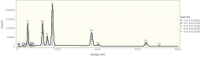
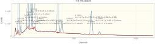
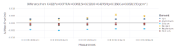
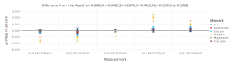

Quantifying K412 using NeXLSpectrum and NeXLMatrixCorrection
Use the NeXLSpectrum to load, plot, fit and report the quantification of a set of K412 spectra.
Loading NeXLSpectrum also automatically makes NeXLCore and NeXLUncertainties available.
Loading the Gadfly library adds plotting support to NeXLSpectrum.
using NeXLSpectrum # Provides spectrum reading and fitting tools
using NeXLMatrixCorrection # Provides `quant` to convert k-ratios to mass fraction.
using Gadfly # Plotting
using DataFrames # TablesRead in the Spectra
path = "K412 spectra"
# Load a single spectrum
fe = loadspectrum(joinpath(path, "Fe std.msa"))
# Create a detector model to match it
det = matching(fe, 132.0, 10)
# Now load all the spectra using this detector
unks = (i->loadspectrum(joinpath(path, "III-E K412[$i][4].msa"),det)).(0:4)
al2o3 = loadspectrum(joinpath(path, "Al2O3 std.msa"),det)
caf2 = loadspectrum(joinpath(path, "CaF2 std.msa"),det)
fe = loadspectrum(joinpath(path, "Fe std.msa"),det)
mgo = loadspectrum(joinpath(path, "MgO std.msa"),det)
sio2 = loadspectrum(joinpath(path, "SiO2 std.msa"),det)
# Add carbon coating
map(s->s[:Coating]=Film(pure(n"C"), 30.0e-7), unks)
map(s->s[:Coating]=Film(pure(n"C"), 10.0e-7), (al2o3, caf2, mgo, sio2))
asa(DataFrame, Spectrum[unks..., al2o3, caf2, fe, mgo, sio2])10×8 DataFrame. Omitted printing of 3 columns
│ Row │ Name │ BeamEnergy │ ProbeCurrent │ LiveTime │ RealTim
e │
│ │ String │ Float64? │ Float64? │ Float64? │ Float64
? │
├─────┼────────────────────┼────────────┼──────────────┼──────────┼────────
──┤
│ 1 │ III-E K412[0][all] │ 20000.0 │ 1.11355 │ 235.484 │ 286.279
│
│ 2 │ III-E K412[1][all] │ 20000.0 │ 1.11355 │ 235.433 │ 286.218
│
│ 3 │ III-E K412[2][all] │ 20000.0 │ 1.11172 │ 235.45 │ 286.278
│
│ 4 │ III-E K412[3][all] │ 20000.0 │ 1.10989 │ 235.441 │ 286.281
│
│ 5 │ III-E K412[4][all] │ 20000.0 │ 1.10989 │ 235.399 │ 286.214
│
│ 6 │ Al2O3 std │ 20000.0 │ 1.10989 │ 1172.19 │ 1491.48
│
│ 7 │ CaF2 std │ 20000.0 │ 1.10989 │ 1176.1 │ 1456.12
│
│ 8 │ Fe std │ 20000.0 │ 1.10989 │ 1171.48 │ 1528.75
│
│ 9 │ MgO std │ 20000.0 │ 1.10637 │ 1175.78 │ 1496.02
│
│ 10 │ SiO2 std │ 20000.0 │ 1.10989 │ 1173.16 │ 1470.35
│Notice that the spectra all have 1) live-time (:LiveTime); 2) probe-current (:ProbeCurrent); 3) take-off angle (:TakeOffAngle); 4) beam energy (:BeamEnergy); and detector (:Detector) properties defined. These properties are necessary for extracting the k-ratios and estimating the composition.
sio2[:LiveTime], sio2[:ProbeCurrent], sio2[:TakeOffAngle], sio2[:BeamEnergy], sio2[:Detector](1173.1648, 1.10989, 0.6108652381980153, 20000.0, BasicEDS(4096, E[ch] = 1.
63032 + 9.99856⋅ch, 132.0 eV @ Mn K-L3, 10, Dict{Shell,Element}(Shell[M] =>
Element(Barium),Shell[N] => Element(Plutonium),Shell[K] => Element(Berylli
um),Shell[L] => Element(Scandium))))The Unknowns
display(plot(unks..., klms=[n"O",n"Mg",n"Al",n"Si",n"Ca",n"Fe"], xmax=8.0e3))
The Reference Spectra
Build a convenient structure so it is easy to appreciate the necessary information and to splat it into filteredReference.
refs = (
# spectrum, element, composition
( al2o3, n"Al", mat"Al2O3" ), #
( mgo, n"Mg", mat"MgO" ), #
( fe, n"Fe", mat"Fe" ), #
( sio2, n"Si", mat"SiO2" ), #
( sio2, n"O", mat"SiO2" ), #
( caf2, n"Ca", mat"CaF2" ), )
display(plot(al2o3, caf2, fe, mgo, sio2, klms=collect( ref[2] for ref in refs), xmax=8.0e3))
Pre-filter the Reference Spectra
# Build a top-hat filter
filt = buildfilter(NeXLSpectrum.GaussianFilter,det)
# Filter all the reference spectra
frs = mapreduce(ref->filterreference(filt, ref..., withEsc=true), append!, refs)
# frs is now a FilteredReference[] used to fit the unknowns.Fit the Pre-Filtered References to the Unknowns
res= [ fit(unk,filt,frs,false) for unk in unks ]
asa(DataFrame, res)5×9 DataFrame. Omitted printing of 6 columns
│ Row │ Spectra │ O K-L3 + 1 other │ Fe L3-M5 + 11 others │
│ │ String │ Float64 │ Float64 │
├─────┼────────────────────┼──────────────────┼──────────────────────┤
│ 1 │ III-E K412[0][all] │ 0.652023 │ 0.0424457 │
│ 2 │ III-E K412[1][all] │ 0.653953 │ 0.0420769 │
│ 3 │ III-E K412[2][all] │ 0.654476 │ 0.0424492 │
│ 4 │ III-E K412[3][all] │ 0.658893 │ 0.0419923 │
│ 5 │ III-E K412[4][all] │ 0.657297 │ 0.04136 │Let's take a look at a residual spectrum by plotting one of the FilterFitResult objects.
plot(res[1])
Quantify the k-ratios by Matrix Correction
quant = quantify.(res)
asa(DataFrame, quant)5×8 DataFrame. Omitted printing of 3 columns
│ Row │ Material │ O │ Mg │ Al │ Si │
│ │ String │ Abstrac… │ Abstrac… │ Abstract… │ Abstrac… │
├─────┼────────────────────┼──────────┼──────────┼───────────┼──────────┤
│ 1 │ III-E K412[0][all] │ 0.429722 │ 0.114789 │ 0.048185 │ 0.207347 │
│ 2 │ III-E K412[1][all] │ 0.430204 │ 0.114803 │ 0.0480109 │ 0.20688 │
│ 3 │ III-E K412[2][all] │ 0.430941 │ 0.115058 │ 0.0482529 │ 0.207572 │
│ 4 │ III-E K412[3][all] │ 0.433338 │ 0.115228 │ 0.0483 │ 0.207982 │
│ 5 │ III-E K412[4][all] │ 0.432318 │ 0.115281 │ 0.0483845 │ 0.208002 │Finally plot the results as mass fractions.
plot(quant, known=unks[1][:Composition])
Plot the difference from the SRM value.
plot(quant, known=unks[1][:Composition], delta=true)
Plot the difference from the mean value for each element.
plot(quant, delta=true)